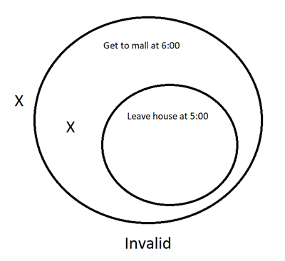

Linear Modeling and Logic Unit
4.8 and 4.9 Review
Venn Diagrams and Deductive Arguments
- Draw a Venn Diagram to represent the following information and answer the questions.
100 college freshmen were interviewed
28 students were registered for a math class
31 students were registered for an English class
42 students were registered for a Psychology class
9 students were registered for both math and English
10 students were registered for both English and Psychology
6 students were registered for both math and Psychology
4 students were registered for all three types of classes
- How many students took none of these three subjects?
- How many students took math, but not English or Psychology?
- How many students took math and English, but not Psychology?
- Premise: All humans are mortal.
- Premise: All squares are rectangles.
- Premise: Some bees may sting you when you do not take caution around them.
- Premise: If I leave my house at 5:00pm, I will get to the mall at 6:00pm.
- Premise: There are no politicians who are honest.

![A Venn Diagram enclosed in a rectangle that represents the universal set and contains 3 intersecting circles. One circle represents math, one represents English and one represents Psychology. There are numbers that represent the number of students in each section of the diagram. The number 17 is in math only, the number 30 is in Psychology only and the number 16 is in English only. The number 2 is in the intersection of math and Psychology. The number 5 is in the intersection of math and English. The number 6 is in the intersection of Psychology and English. The number 4 is in the intersection of all three circles and the number 20 is outside all three circles and inside the rectangle.](images/u4s8s9p1k.png)
Using a Venn diagram, determine if the following arguments are valid or invalid.
Premise: Cassie is not human.
Conclusion: Cassie is not mortal.
Premise: All rectangles have four sides.
Conclusion: All squares have four sides.

Premise: Taylor was not careful when she played in the field where many bees are known to reside.
Conclusion: Taylor was stung by a bee.

Premise: I left my house at 5:30pm.
Conclusion: I made it to the mall by 6:00pm.

Premise: Garrett Poindexter is a dishonest man.
Conclusion: Garrett Poindexter is a politician.